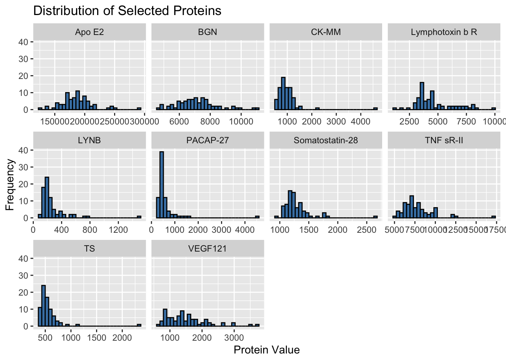
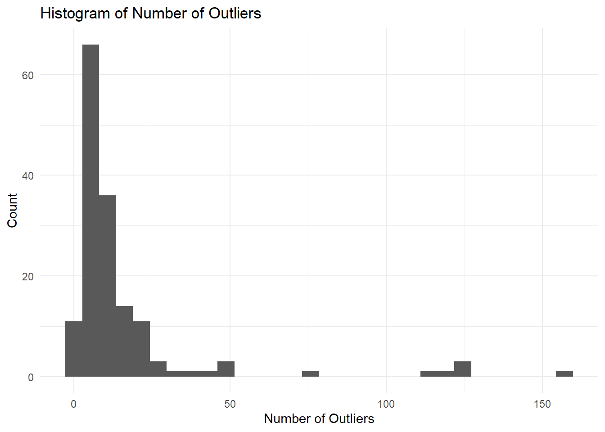
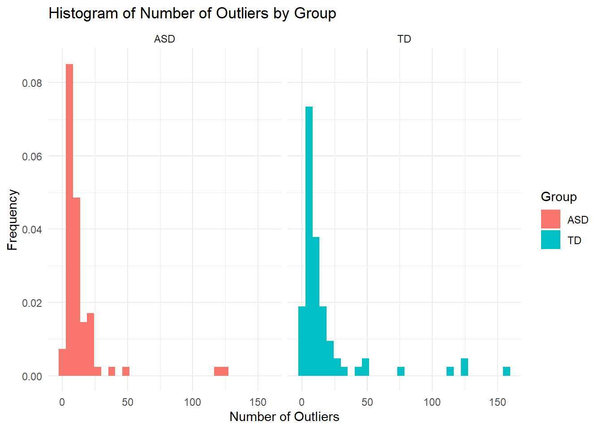
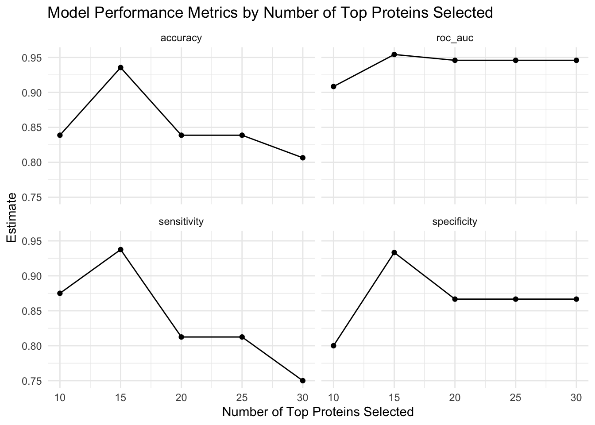

Biomarkers of ASD
Abstract
Write a brief one-paragraph abstract that describes the contents of your write-up.
Dataset
The data for this study were obtained from a cohort of 154 male pediatric subjects, including 76 with Autism Spectrum Disorder (ASD) and 78 typically developing (TD) boys. Serum samples were collected and analyzed using the SomaLogic SOMAScan platform, which measures the levels of 1,317 proteins. After quality control, 1,125 proteins were analyzed. The primary variables measured in this study include demographic information such as age, ethnicity, and co-morbid conditions. Other variables include the Autism Diagnostic Observation Schedule (ADOS) scores for ASD severity based on clinical assessment. Data preprocessing involved normalization and outlier handling. The protein abundance data were log10 transformed and z-transformed. Outliers were clipped to a specific range to mitigate their impact on analysis.
Summary of published analysis
The study employed a multi-step approach to identify potential biomarkers for autism spectrum disorder (ASD). After the data was collected and preprocessed, a combination of three feature selection methods was used to identify a subset of proteins with the highest predictive power for ASD. These methods included random forest, t-tests, and correlation analysis with ADOS scores. By combining the top-ranked proteins from each method, a core set of 5 proteins was identified.
Finally, a logistic regression model was trained on the selected proteins to predict ASD status. The model’s performance was evaluated using the area under the curve (AUC) metric. The optimal panel of 9 proteins, including the 5 core proteins and 4 additional proteins, achieved an AUC of 0.86, indicating high accuracy in distinguishing between ASD and TD cases.
Findings
Summarize your findings here. I’ve included some subheaders in a way that seems natural to me; you can structure this section however you like.
Impact of preprocessing and outliers
Question 1
The reason for log-transforming the protein levels in
biomarker-raw.csvis likely to reduce skewness as protein levels often follow a skewed or non-normal distribution as seen in the histograms for a sample of proteins such as PACAP-27, TS, and LYNB. Protein levels can also have varying scales of measurement, which can lead to heteroscedasticity or non-constant variance. This can lead to issues with statistical analyses that assume normality. Log-transformation can help stabilize the variance which can in turn improve overall model performance.
Question 2
To analyze the outliers in the protein serum level data, the trimming step was removed from the data cleaning process and the number of outliers (values that previously would have been trimmed) were tabulated for each row of observations. The summary statistics for the number of outliers for all observations is shown below.
| Min. | 1st Qu. | Median | Mean | 3rd Qu. | Max. |
|---|---|---|---|---|---|
| 0 | 5 | 8.5 | 15.44805 | 14.75 | 157 |
We see that the median number of outliers is 8.50, while the mean number of outliers is 15.45, so the distribution of the number of outliers is skewed right, as can be seen in the following histogram.

To look at these extreme values, we create a table of the ten observations with the largest number of outliers.
| id | group | ados | n.outlier |
|---|---|---|---|
| 154 | TD | NA | 157 |
| 108 | TD | NA | 127 |
| 9 | ASD | 22 | 126 |
| 121 | TD | NA | 122 |
| 52 | ASD | 7 | 121 |
| 77 | TD | NA | 114 |
| 147 | TD | NA | 77 |
| 24 | ASD | 17 | 48 |
| 100 | TD | NA | 47 |
| 150 | TD | NA | 47 |
We see that 6 observations of more than 100 outliers, suggesting that they as particular subjects may be outliers. Additionally, 7 out of the top 10 are from the TD group, suggesting that outliers may be more prevalent in this group than the ASD group. To confirm this, we generate a histogram of the number of outliers in each group.

From this plot, we do see that it is indeed the case that the TD group has a higher prevalence of outlier subjects than the ASD group.
Methodlogical variations
Original
ASD TD class.error
ASD 49 27 0.3552632
TD 21 57 0.2692308# A tibble: 4 × 3
.metric .estimator .estimate
<chr> <chr> <dbl>
1 sensitivity binary 0.812
2 specificity binary 0.733
3 accuracy binary 0.774
4 roc_auc binary 0.883Modification 1: Training Partition
ASD TD class.error
ASD 35 25 0.4166667
TD 15 48 0.2380952# A tibble: 4 × 3
.metric .estimator .estimate
<chr> <chr> <dbl>
1 sensitivity binary 0.688
2 specificity binary 0.733
3 accuracy binary 0.710
4 roc_auc binary 0.85 For this modification, proteins were selected by first training the data on the training group before testing the accuracy of the model using the testing group.
With this modification, each metric used to evaluate the accuracy of our classifier was lower. The ROC AUC decreased from 0.908 to 0.85. This indicates that this model has worse discriminatory power in distinguishing between the two classes. Additionally, before, there was a sensitivity of 0.875 and specificity of 0.8. However, this model achieved a sensitivity of 0.688 and a specificity of 0.733. This model had a much lower sensitivity, indicating that it is worse at identifying true positive cases (correctly identifying individuals with ASD) and also has a higher false positive rate.
Therefore, partitioning the data before analysis did not seem to improve results as the modification yield less data to be trained on.
Modification 2:
For this modification, the analysis was performed again with 15, 20, 25, and 30 of the top proteins selected from each method. The four model performance metrics (accuracy, ROC_AUC, sensitivity, and specificity) of the final model are plotted against the number of top proteins selected in the following plot.

We see that as the number of top proteins selected increases, the ROC AUC and specificity incrase, while the sensitivity tends to decrease. The accuracy increases at first, then stabilizes to around 0.84